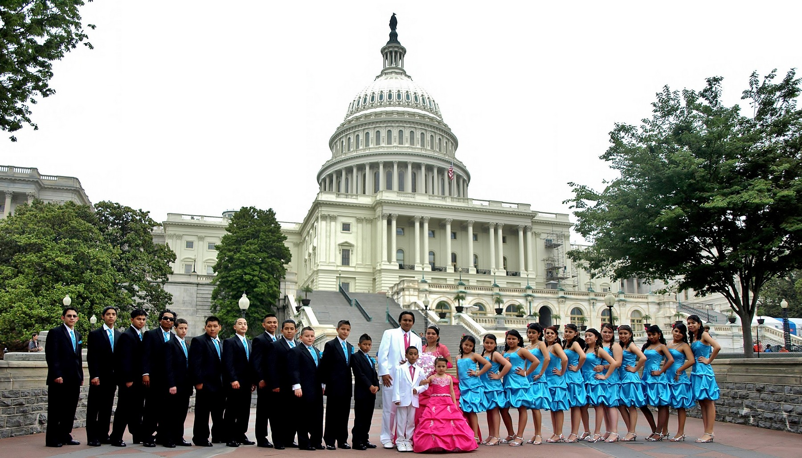

Best Places to Take Portraits in the DMV
By David Mejia Published: 12/10/2019
The DC, Maryland and Virginia metropolitan area has many places that are beautiful as backgrounds in a portrait. The following article will display some of those wonderful places in the DMV.
The US Capitol

Address: First St SE,
Washington, DC 20004
The US Capitol has many opportunities for a nice architectural background. Best suited for senior or graduation portraits,
the marble finish creates a nice neutral background that helps when trying to make the subject stand up in the composition.
Cons: Tripods/Monopods are not permitted in some areas. It tends to get crowded during the summer. Parking is a nightmare.
Pros: Neutral background. Great for large groups.
To be continue...